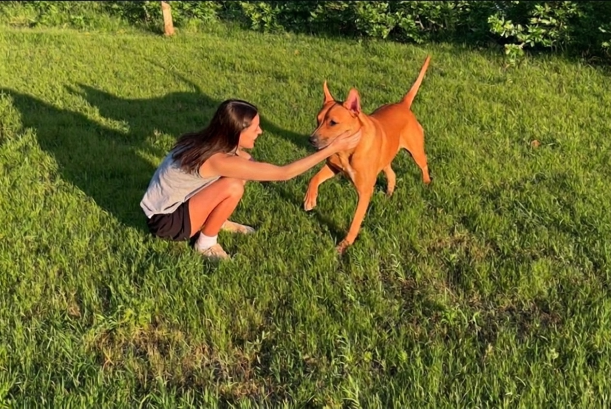
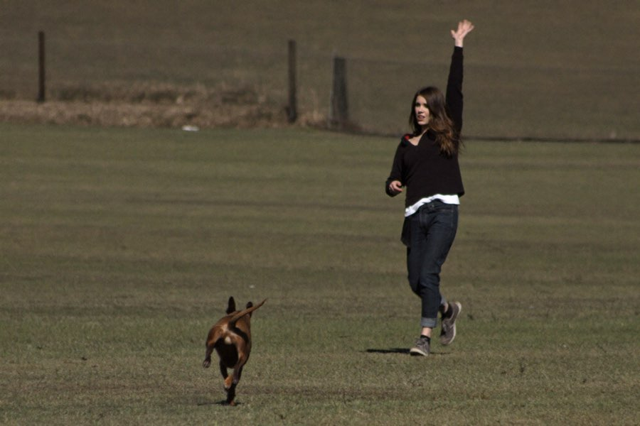
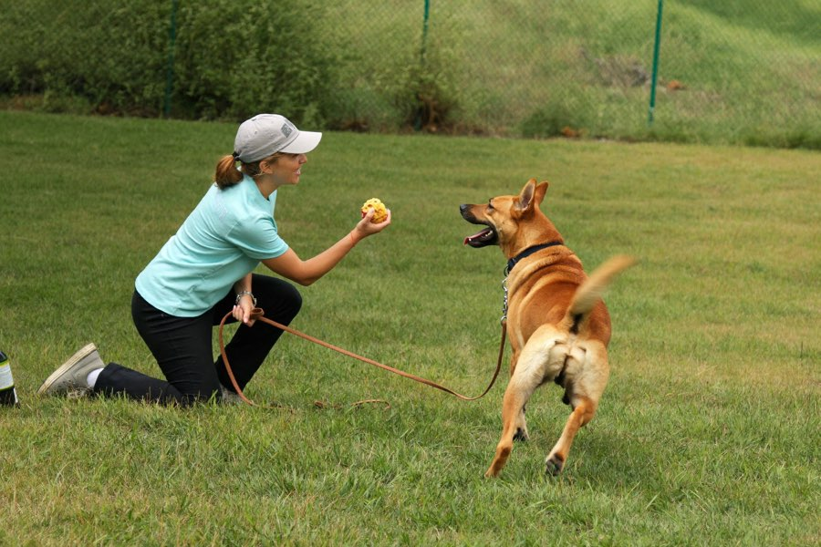
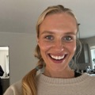
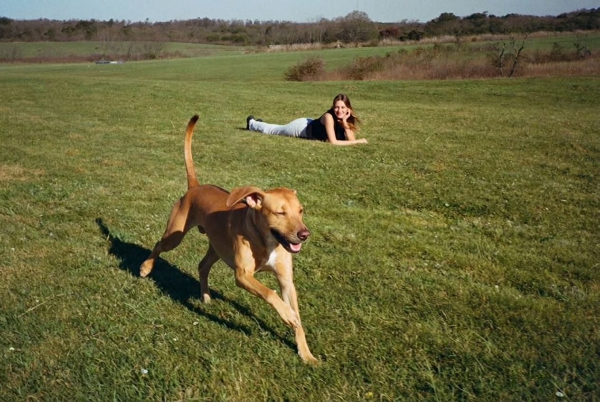
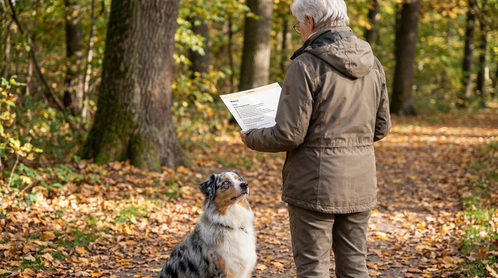

Dlaczego Twój pies po prostu biegnie dalej, gdy go wołasz, i trik, dzięki któremu tysiące właścicieli znów puszcza psa luzem
„Pies nie wraca na zawołanie, gdy naprawdę na tym zależy." To chyba najczęstsze zdanie właścicieli psów. Trenerka wyjaśnia, dlaczego głośniejsze wołanie to dokładnie zły ruch, i jak nauczyć psa przywołania, na którym możesz polegać.
 Autor: Lena Kowalska · Redakcja ŁapaPlan · 2 dni temu · 4 min czytania
Autor: Lena Kowalska · Redakcja ŁapaPlan · 2 dni temu · 4 min czytania
Wołasz. Twój pies na chwilę podnosi głowę, i biegnie dalej. Do kolejnej grupy psów, w pole, w stronę ulicy. Serce podchodzi Ci do gardła, wołasz głośniej, biegniesz za nim. A potem sfrustrowany znów zakładasz mu smycz, bo już się nie odważysz jej zdjąć.
I gdy tak biegniesz za nim, wszystko przelatuje Ci przez głowę naraz: ta ulica dalej, strumień, biegacz, który lada moment wyłoni się zza rogu. Strach siedzi Ci na karku. Więc w końcu robisz jedyną rzecz, która wydaje się bezpieczna, w ogóle nie spuszczasz go już ze smyczy. Kropka.
Ale głęboko w środku wiesz, że właśnie tego mu brakuje: swobodnego biegania, węszenia, po prostu bycia psem. Za każdym razem, gdy mijacie piękną łąkę, a smycz zostaje zapięta, boli to odrobinę. Bo przecież chcesz dać mu tylko to, co najlepsze, a jednocześnie nie masz odwagi.
Najbardziej frustrujące jest to, że Twój pies nie jest uparty. Dla niego świat tam na zewnątrz jest po prostu ciekawszy niż Ty w tym momencie. Przywołanie psa nie zawodzi z powodu braku posłuszeństwa, lecz dlatego, że „powrót" jest dla psa mniej opłacalny niż „bieg dalej".
Dlaczego głośniejsze wołanie niszczy przywołanie
Za każdym razem, gdy wołasz, a Twój pies nie przychodzi, uczy się: „To słowo nic nie znaczy." A gdy w końcu przybiegnie i zostanie zbesztany (albo natychmiast wzięty na smycz), uczy się: „Powrót się nie opłaca." Tak Twoje słowo przywołania z czasem staje się pustym dźwiękiem, bez względu na to, jak głośno je wypowiadasz.

Punkt zwrotny: powrót musi się opłacać bardziej
Trenerzy ŁapaPlan odwracają sytuację. Zamiast wymuszać posłuszeństwo, sprawiają, że stajesz się dla swojego psa najatrakcyjniejszym punktem na całej łące, i budują przywołanie tam, gdzie jeszcze udaje się bezpiecznie, zanim stopniowo podnoszą poziom trudności. Najpierw bezpieczeństwo (na lince treningowej), wolność jako nagroda.
I bez obaw: nie potrzebujesz do tego placu treningowego, drogich lekcji indywidualnych ani perfekcyjnego wyczucia czasu. Wystarczy jasny plan dopasowany do Twojego psa i odrobina cierpliwości. Większość właścicieli przeżywa pierwszy mały przełom szybciej, niż sądzi: moment, w którym pies na dźwięk swojego imienia faktycznie się odwraca i radośnie przybiega. Ten jeden moment, to „on naprawdę wraca!", zmienia wszystko. Od tej chwili budujecie już tylko na tym.

Tak wygląda trening, krok po kroku
Jak niezawodnie wraca Twój pies?
Zrób bezpłatny 60-sekundowy test, od razu dostaniesz ocenę dla dokładnie Twojego psa.
ROZPOCZNIJ TEST DLA PSABezpłatnie · 60 sekund · wynik od razuCo mówią właściciele

„Przez dwa lata nie odważyłam się spuścić Nali ze smyczy. Po tym planie wraca teraz nawet wtedy, gdy w pobliżu są inne psy. Pierwszy raz na wolności, miałam łzy w oczach."
„Pomysł z linką treningową był przełomem. Wreszcie mogłem ćwiczyć bez strachu. Po czterech tygodniach Rocky wracał nawet z pełnego biegu."

„Przez dwa lata mogłam chodzić tylko na smyczy. Przy pierwszym swobodnym przywołaniu na łące Emmi przybiegła tak, jakby nigdy nie robiła nic innego, a ja stałam i płakałam ze szczęścia. Takie małe słowo, a taka wielka różnica."

Co sprawia, że ŁapaPlan jest tak wyjątkowy
Sekret nie tkwi w żadnym nowym cudownym triku, lecz w planie dopasowanym dokładnie do Twojego psa. Odpowiadasz na kilka krótkich pytań o rasę, wiek i zachowanie, a na tej podstawie powstaje osobisty plan treningowy. Tydzień po tygodniu, z konkretnymi ćwiczeniami, całkowicie w Twoim tempie, z domu.

- Indywidualnie zamiast schematycznie: dopasowany do rasy, wieku i dokładnie tego, co u Twojego psa teraz szwankuje. Lękliwy pies dostaje inny plan niż porywczy młodziak.
- Wszystko wyjaśnione krok po kroku: bardzo zrozumiale, także bez wcześniejszego doświadczenia.
- Zawsze ktoś na Twoje pytania: odpowiedź dostaniesz o każdej porze, nawet o dziesiątej wieczorem.
- Jednorazowa płatność zamiast drogich lekcji indywidualnych, bez zobowiązującego abonamentu.
I tak, tego nauczysz swojego psa samodzielnie
Nie potrzebujesz żadnego wykształcenia ani szczególnego talentu. Nie dostaniesz grubego poradnika pełnego teorii, lecz krótkie, jasne ćwiczenia, krok po kroku wyjaśnione zwyczajnymi słowami. Dziesięć minut dziennie wystarczy, a tempo ustalasz Ty. Jeśli któregoś dnia wypadnie, to zupełnie w porządku. Tysiące właścicieli, którzy wcześniej nigdy nie „trenowali", robią dokładnie to, na łące za domem zamiast na placu treningowym.
„Przecież mój pies jest już na to za stary", najczęstszy błąd
Niezawodne przywołanie to nie kwestia wieku. Także dorosły albo starszy pies uczy się znów wracać niezawodnie, często nawet spokojniej i z większym skupieniem niż młody wicher. Nigdy nie jest za późno. Zaczynasz dokładnie tam, gdzie jesteście dzisiaj.
Bez ciągłego wpatrywania się w telefon
Nie musisz wisieć nad ekranem. Możesz sobie po prostu wydrukować każdy tydzień i zabrać kartkę na spacer, ćwiczenie w jednej ręce, smycz w drugiej. Wszystko jest zrobione tak, byś od razu to zrozumiał, całkiem bez technicznego zamieszania.

Wyobraź sobie dzień, w którym po raz pierwszy od dawna po prostu zdejmujesz smycz i całkiem spokojnie wiesz: on wróci. Twój pies pędzi przez łąkę, uszy na wietrze, na Twoje wołanie odwraca się i radośnie przybiega. Właśnie ta wolność należy do was obojga. A pierwszy krok do niej zajmuje tylko 60 sekund.
Znów puść psa luzem, bezpiecznie
Krótki test pokaże Ci, dlaczego Twoje przywołanie jeszcze nie działa, i jak wyglądałby Twój osobisty plan.
ROZPOCZNIJ BEZPŁATNY TEST DLA PSA →W 60 sekund do Twojej osobistej ocenyBez zobowiązującego abonamentu · opracowane przez prawdziwych trenerów